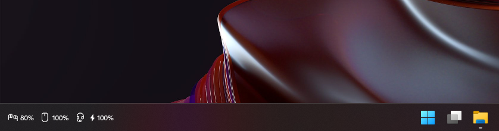

Wireless Battery Tray
Battery levels of your wireless keyboards, mice, headsets and controllers, right on the Windows taskbar of the monitor you choose.

What it does
- Always in viewOne icon and percentage per device, inside the taskbar next to the clock.
- Any monitorPick the display, left or right side, and an offset.
- Charging and low batteryA bolt while charging, red below your chosen level.
- Out of the wayHides with the taskbar in full-screen apps and follows light/dark mode.
- Your layoutShow, hide, reorder and relabel devices with a live preview.
- Read-onlyOnly ever queries devices. Optional, click-to-install updates.
Supported devices
| Device / family | Connection | Battery | Charging |
|---|---|---|---|
| Bluetooth headsets, earbuds and others that report battery to Windows | Bluetooth classic | ✓ | – |
| BLE keyboards and mice, including split keyboards | Bluetooth LE | ✓ | – |
| Logitech on Unifying, Bolt and Lightspeed receivers | 2.4 GHz receiver | ✓ | ✓ |
| SteelSeries Arctis Nova 7 family | 2.4 GHz dongle | ✓ | ✓ |
| Sony DualShock 4 | Bluetooth, USB | ✓ | ✓ |
| Keychron keyboards on a Keychron Link | 2.4 GHz receiver | – | – |
Questions
- How do I see my Bluetooth headphones' or mouse's battery on the Windows taskbar?
- Run Wireless Battery Tray. It adds a small strip inside the Windows 10/11 taskbar with an icon and percentage for every connected wireless keyboard, mouse, headset, earbuds and controller.
- Does it show Logitech battery without Logi Options+?
- Yes. Logitech devices on Unifying, Bolt and Lightspeed receivers are read over HID++ 2.0, with or without Logi Options+, including the charging state.
- Can it show both halves of a split keyboard like the Glove80?
- Yes, every BLE battery value is shown. ZMK split keyboards show both halves when the firmware is built with
CONFIG_ZMK_SPLIT_BLE_CENTRAL_BATTERY_LEVEL_PROXY=y. - Is it free?
- Yes, free and open source under the MIT license.